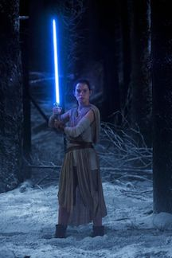

Force Awakens Review:
Still, the film’s tilt toward nostalgia over novelty will hardly prove a commercial liability; indeed, nothing short of a global cataclysm (and even then, who knows) is likely to keep Disney’s hugely anticipated Dec. 18 release from becoming the year’s top-grossing movie and possibly the most successful movie of all time, at least until the forthcoming episodes directed by Rian Johnson and Colin Trevorrow arrive. And if Abrams and his co-writers Lawrence Kasdan (back for more after “The Empire Strikes Back” and “Return of the Jedi”) and Michael Arndt have shouldered a near-impossible burden of audience expectations here, it’s hard not to look favorably upon “The Force Awakens” simply for being a massive improvement on “The Phantom Menace,” “Attack of the Clones” and all but a handful of moments in “Revenge of the Sith” — taken together, a stultifying experiment in brand extension gone awry, in which Lucas’ much-vaunted technical wizardry and visual imagination proved no match for the unholy torpor of his storytelling.
By contrast, “The Force Awakens” feels disarmingly swift and light on its feet, possessed of a comic sensibility that embraces contemporary wisecrackery and earnest humor in equal measure. Shot on 35mm film (plus some 65mm Imax footage), in a decisive refutation of Lucas’ all-digital aesthetic, Abrams’ movie has grit under its nails and blood in its veins, as we see in an early battle sequence in which an Imperial Stormtrooper’s white helmet is suddenly streaked with red. A conflicted young warrior-slave who goes by the name of Finn (John Boyega), this Stormtrooper has been brainwashed into serving the First Order — a new army of galactic terrorists that arose from the ashes of the evil Empire, about three decades after the Battle of Endor. Doing battle with the First Order are the good men and women behind a rebel movement called the Resistance.
Rogue One Review:
If this all sounds dauntingly technical, that’s because it is. At the risk of being sacrilegious, “Star Wars” — with its notions of Jedis and the Force — has become one of the world’s favorite myths, bypassing a number of traditional belief systems in its increasingly cult-like appeal (give it another century, and fandom could well crystallize into worship). As such, any new addition to the canon demands more than just a passing familiarity with the previously established lore, while the slightest infidelity on the filmmakers’ part threatens to upset its followers.
“Rogue One” is loaded with allusions to otherfilms in the franchise, and though that’s fun for the faithful, it also makes this the “Battlefield Earth” of the series: an elaborate, complex-to-the-point-of-confusing space opera that will earn few converts, while appealing primarily to the already-converted. Except, as for-profit “religions” go, there are a whole lot more “Star Wars” followers out there than there are Scientologists.
In all fairness, while “Rogue One” is complicated, it isn’t any more so than the elaborate trade-and-taxation backstory of “The Phantom Menace.” Beginning on a volcanic-soil planet that looks suspiciously like Iceland, where Imperial-scientist-turned-farmer Galen Erso (Mads Mikkelsen) has retired to raise crops — and his daughter, Jyn — in relative peace, the movie is the second to center on a female protagonist, after last year’s more traditionally fun “The Force Awakens.” The young Jyn is traumatized after seeing her mother murdered and her father taken into custody by white-caped Imperial baddie Orson Krennic (Ben Mendelsohn). Skip forward 20 or so years, and Jyn Erso (Felicity Jones) has gone from playing with dolls to wielding a blaster — allowing the Oscar nominee a kind of take-charge attitude absent from her previous dramatic roles.